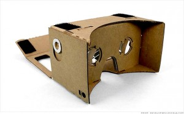
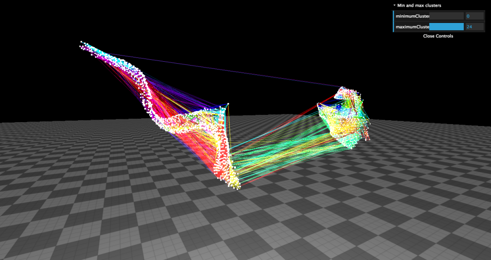

During a project in which I created partitions in the brain there was no simple way to visualise my data. When asking a teacher the best method apparently was: try to write a Matlab script. To help me and others I created a new visualisation tool to display the brain right inside your browser.
To show how well our visualisation works we applied a community detection algorithm to the motor cortices of the brain. Although we did not apply any statistical measures on the resulting data it is possible to see that the community detection algorithm works. As you can see that the resulting communities have a very local focus, while the location of each voxel was not given to the community detector.

{kind=link}
Google Cardboard support

At Google I/O 2014 the google cardboard was introduced. With a cardboard box, two plastic lenses and a smartphone one can create their own 3D glasses. We added support for this cheap visualisation tool so everybody is able to look at the visualisations in three dimensions.
Test it yourself
Only the edges of the subpart of the brain
The complete brain, with the added edges of the subpart of the brain
Only the edges with google cardboard support
Only the edges with occulus rift support
